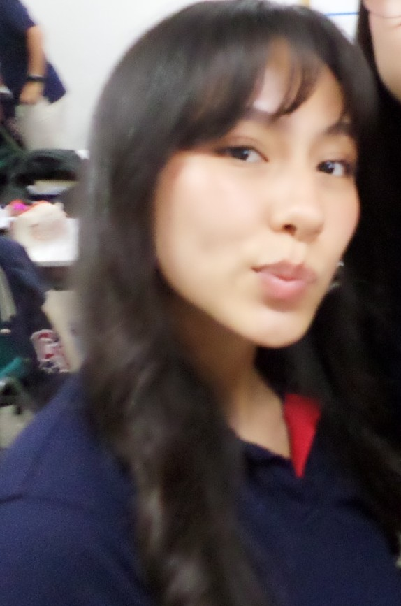
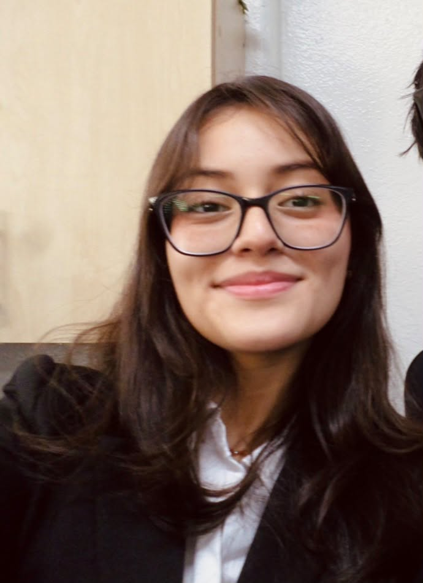
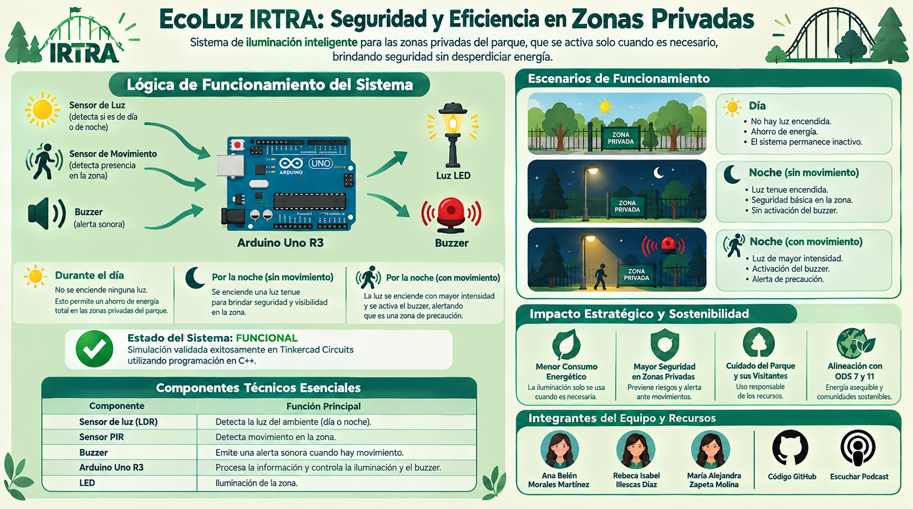

Un sistema autónomo que enciende la iluminación del parque IRTRA Petapa únicamente cuando detecta oscuridad y movimiento real, reduciendo el consumo energético sin sacrificar seguridad.


Resumen, justificación, ODS, materiales y estado del sistema — todo consolidado en la infografía.

Sustituye este bloque por una captura legible de tu circuito ya armado.
Explicación en audio de la lógica del sistema y su impacto en IRTRA Petapa.
Escuchar podcastConsulta aquí mismo el informe completo, sin necesidad de descargarlo.